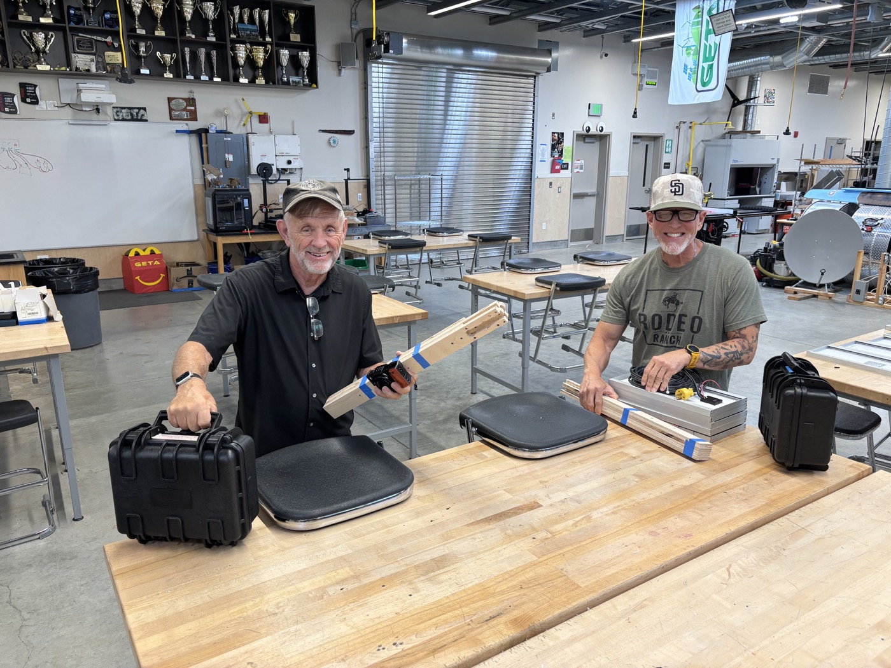
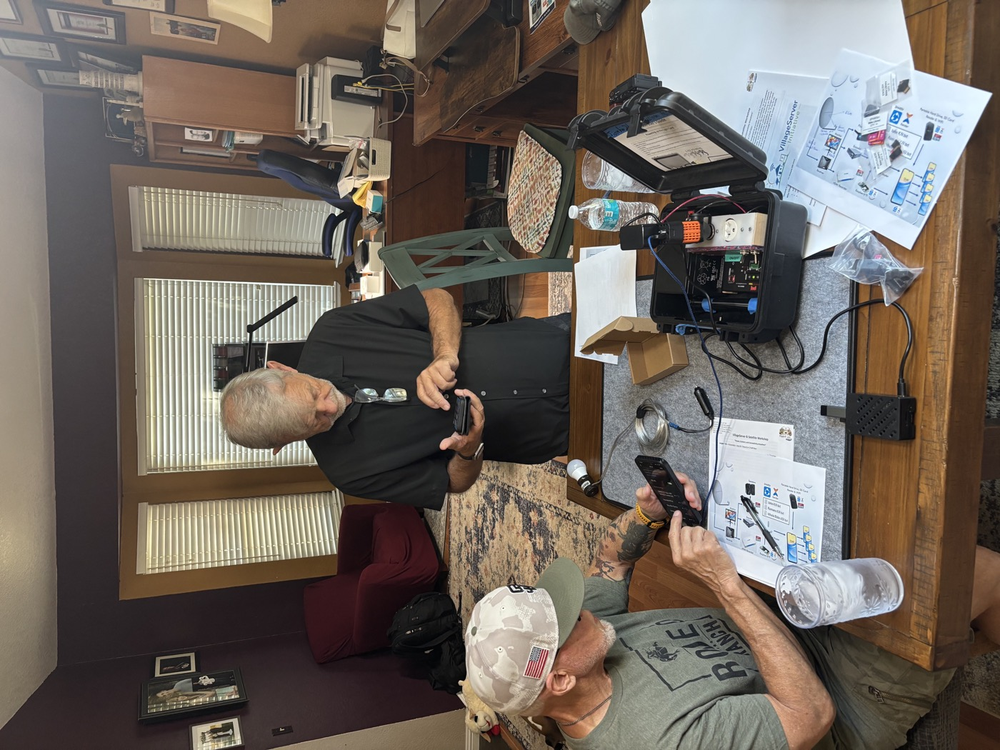
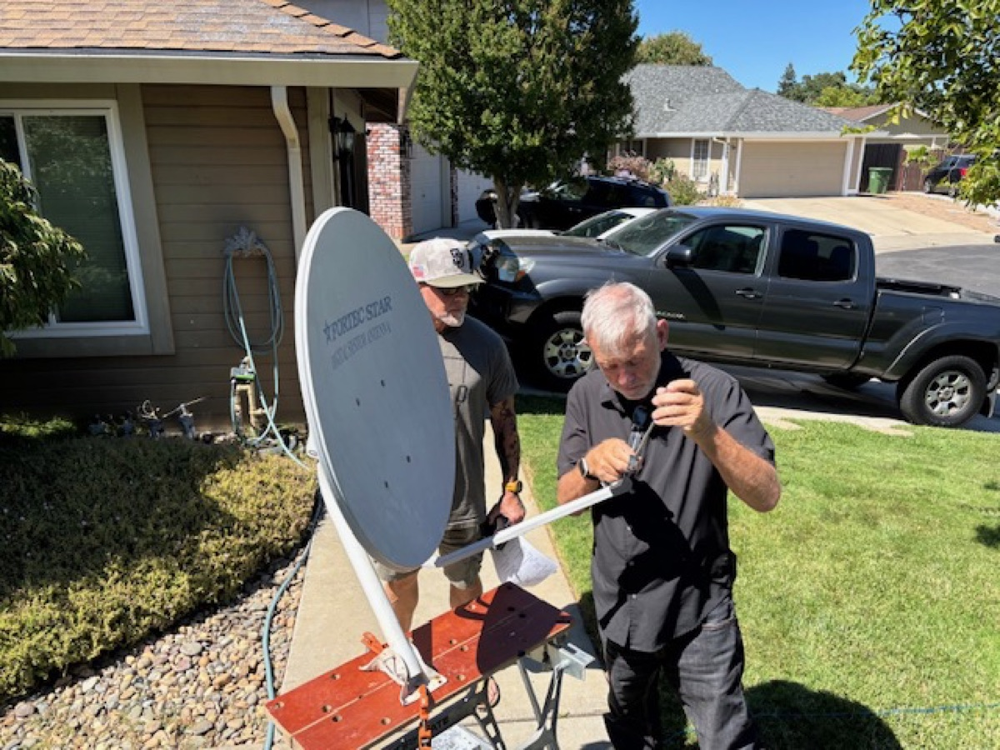

Most people who see VillageServer for the first time aren't technical. They need to understand what the initiative does before they can decide to support it. A good photo communicates in three seconds what three paragraphs struggle to say: what is being used, who is using it, and why it matters.

What makes a visual work
The strongest images are candid, not staged. They show a real moment — a setup being tested, a local leader explaining the process, a group watching a film projected on a wall. Equipment-only photos don't carry the weight that a photo of people does.
- Best photo — a person using the kit in a real setting: a local leader connecting a phone, a group gathered around a projected screen, a missionary handing someone a printed guide
- Best diagram — a simple flow showing power → server → phone → sharing; non-technical viewers should be able to trace the path without explanation
- Best short video — a setup sequence that shows the whole process from unpacking to first file, demonstrating confidence and practicality in under two minutes


How to capture and use visuals well
- Show the people, not just the equipment
Photos of a Raspberry Pi on a table or cables in a case don't communicate the mission. Photos of a group using the kit in a real setting do.
- Capture real setup and handoff moments
The moments that matter most visually are: powering on the kit for the first time, a local leader being trained, a group receiving resources, and a successful file transfer.
- Write plain captions
One sentence explaining the ministry purpose. "A local leader connecting a phone during the first session" is better than "Setup testing in progress."
- Use fewer, stronger images
Five well-chosen photos tell a better story than thirty random ones. A page that feels like a file dump doesn't hold anyone's attention.
- Keep permissions documented
Only publish images and video that are approved for public ministry use. Keep a simple record of who approved what, especially for photos of identifiable people in sensitive regions.
Download the Photos and Visuals guide as a printable PDF for presentation planning and board packets.
Download Visuals Guide PDF